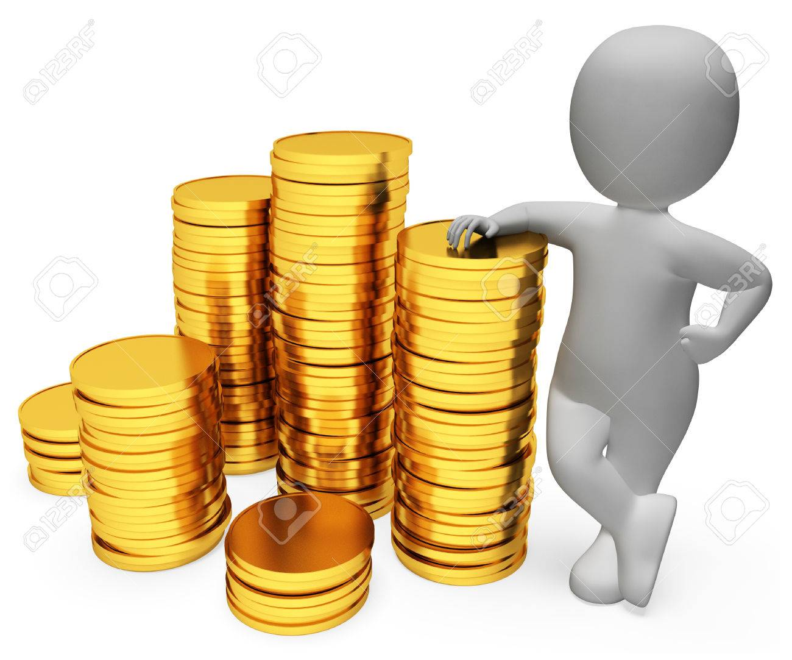

DINERO
La mejor manera de llevar al día tus cuentas y ahorrar al máximo
El dinero... un tema extremadamente importante. En la vida el dinero no lo es todo, esto hay que tenerlo claro, pero hombre...desde luego sí que es necesario y tener una buena
gestión de nuestras cuentas es de lo más vital, practicamente dependerás de ello.
Tips a seguir
- Nunca pagues en efectivo: cuando tenemos dinero en efectivo somos incapaces de controlar
el dinero, vamos pagando las cosas sin ningún tipo de registro ni control y cuando queremos
darnos cuenta...¡PUM! ¿Que ha pasado con mi dinero?-te preguntarás... (es bueno llevar al menos 20 euros en efectivo para cualquier emergencia)
- Siempre con tarjeta: pagar siempre con tarjeta nos facilitará saber cuánto gastamos y en qué.
- Control mi tip más importante es que al menos una vez cada 7-10 días te sientes con la app del banco, papel y boli; mira los registros de tu
tarjeta día por día y ves apuntándolo en el cuaderno
- App: una vez tengas en un cuaderno todos los gastos que has realizado en esos últimos 7-10 días, tendrás que reglejarlo en una app del
móvil para la gestión de gastos, por ejemplo, yo utilizo "gastos", tiene el fondo verde con una billetera marrón de la que sobresalen varias tarjetas.

¿Cómo clasificar los gastos?
- Hogar: aquí hay que añadir los gastos fijos del hojar; alquiler, luz, agua, gas e internet.
- Comida: obviamente, aquí hay que añadir todos los gastos de la comida.
- Gasolina: los gastos de la gasolina en caso de tener algún vehículo.
- Ocio: este campo sin duda es el más importante si queremos ahorrar. Aquí irán todos esos gastos de; comer fuera, ir a tomar algo, ir al cine, coger un taxi,
comida para pelis(patatillas, refrescos, etc) o cervezas para la reunión con los amigos en tu casa, incluso podemos añadir los gastos en ropa.
¡Listo! Seguir estos tips te permitirá controlar los ingresos y los gastos mensuales y sobretodo te facilitará saber en qué se va tu dinero y por tanto en qué debes gastar menos.
Poco a poco tus ahorros empezarán a subir y eso te dará paz y tranquilidad.
Nunca se sabe lo que puede pasar... sin saberlo nos ha cogido una pandemia mundial, desde luego es una señal de que hay que estar preparado.